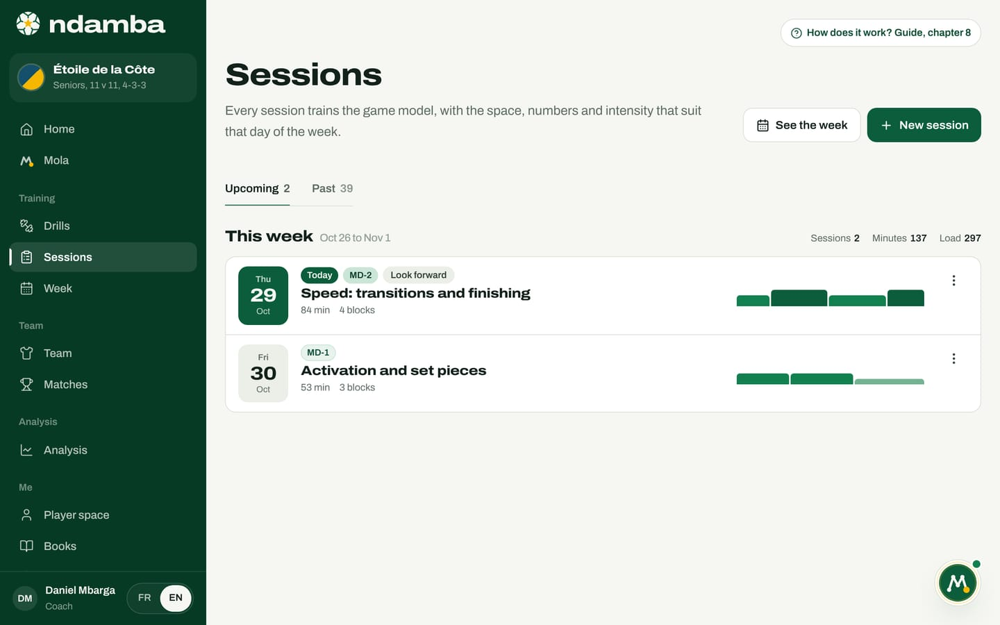
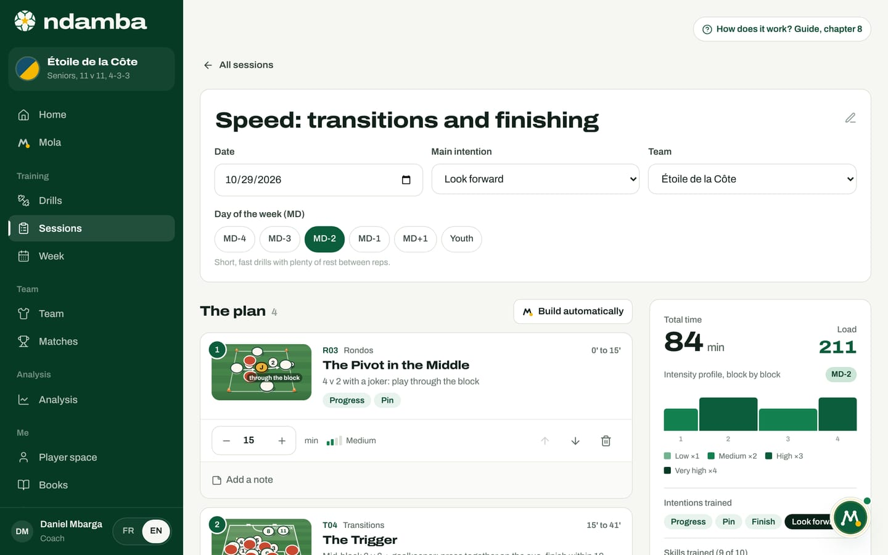
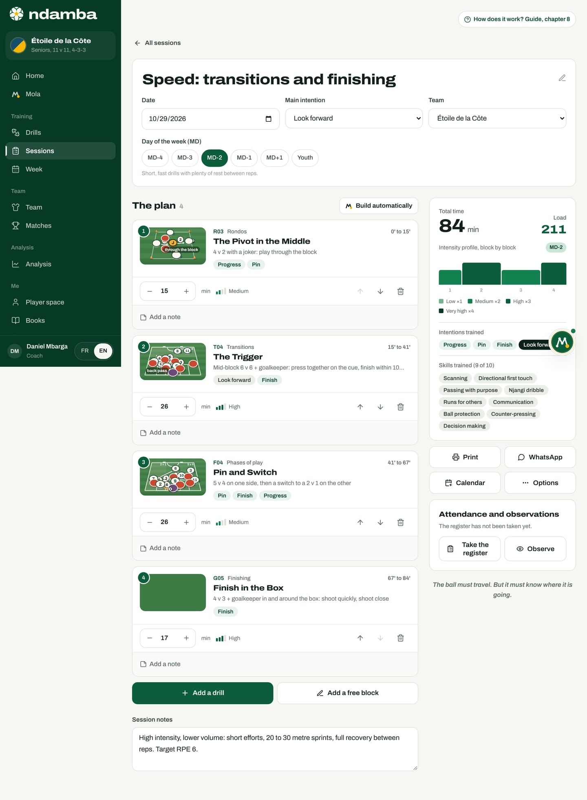

Build a session
The sessions list and the session builder, with the MD day, the intention, the blocks, the minutes, the load, what Mola builds for you, and the sheet you can print or send on WhatsApp.
10 min read
Many sessions are a string of drills the coach happens to like, lasting as long as the daylight does. The Njangi Code asks for the opposite: a session is a short story with a single thread, one intention worked on in several forms, each closer to the match than the last. Ndamba’s session builder lets you write that story in a few minutes, check that it holds together (time, load, intentions), and then take it with you: on an A4 sheet, in WhatsApp or in your calendar.
The sessions list
- In the left-hand menu, under Training, tap Sessions. On a phone, it is the Train tab.
- The Sessions page opens on the Upcoming tab. The Past tab keeps your history, most recent first. Each tab shows how many sessions it holds.
- Sessions are grouped by week: This week, Next week, Last week, then "Week of" and the date of the Monday.


Each group shows three totals on the right: Sessions, Minutes and Load (load is explained below). Note that these totals only count the sessions in the open tab: under Upcoming, the current week only counts today’s sessions and the days ahead. To see the whole week, tap See the week (chapter 9).
Each row shows the date, the MD day, the main intention, the title, the total time, the number of blocks and the intensity profile, one column per block. A Today badge marks the day’s session. A session built by Mola, whether through Mola builds it for me, Plan the week and Prepare the week (chapter 9) or the conversation, carries a small Mola mark. Tap the row to open the session.
The three-dot button at the end of each row offers Duplicate and Delete. Duplicate creates a copy with "(copy)" in its name; if the original is in the past, the copy is placed on today’s date, ready to be moved. Delete asks you to confirm with "Delete this session?". The drills themselves always stay in the library.
If you have no team yet, the page first shows a small card, Create your team first: a Team name, an Age group (from U9 to Seniors) and a Format (from 5 v 5 to 11 v 11), then Create team. Sessions and the week are organised by team.
Creating a session
- Tap New session at the top right.
- Title: you can leave it empty. The session then takes the name of its day, for example "Tension: small spaces" for MD-4, or "Youth session".
- Date and Team: your active team is suggested.
- Day of the week (MD): a row of chips from MD-4 to MD+1, plus Youth. Ndamba suggests the right day from the date and your match calendar (MD-2 two days before a match, for example). Until you touch the chips, the day follows the date; once you pick one, your choice wins. A sentence under the chips reminds you what that day means.
- Main intention: one of the seven intentions, or Any intention. Its definition appears underneath.
- Who builds it?: Mola builds it for me (the right drills for this day, this age and this intention) or I’ll build it (an empty session, you add the drills).
- Tap Build the session (with Mola) or Create session (by hand). The session opens straight away in the builder.
Why only one main intention? The book is clear (chapter 30): pick one intention and bring it to life in every block; a second one can go along with it; beyond that, players remember nothing. The intention also guides Mola: it decides which drills Mola prefers. And the MD day decides the space and the intensity: the same intention, Progress, is trained in a tight small-sided game on MD-4 and on a big pitch on MD-3.
What Mola builds
When Mola builds a session, it follows a fixed plan for each day, taken from the book’s model week. It fills each block with a drill from the right family.
| Day | The blocks Mola prepares | Total |
|---|---|---|
| MD-4, Tension | Rondo 12 min, small-sided game 20 min, transition or small-sided game 15 min, finishing 12 min | 59 min |
| MD-3, Duration | Rondo 12 min, positional game 20 min, large-sided game or phase of play 30 min | 62 min |
| MD-2, Speed | Rondo 10 min, transition 15 min, finishing 15 min, small-sided game 12 min | 52 min |
| MD-1, Activation | Technique or rondo 10 min, phase of play or finishing 15 min, free block "Set pieces" 15 min | 40 min |
| MD+1, Recovery | Technique or rondo 12 min, free block "Active recovery and stretching" 20 min | 32 min |
| Youth | Technique 10 min, rondo 12 min, small-sided game 20 min, positional game 15 min, finishing or small-sided game 15 min, free block "Free match" 20 min | 92 min |
The totals assume each family has a drill for the team’s age; if not, the block is skipped (large-sided games, for example, start at U13). For each block, Mola looks for a drill of the right family, suited to the team’s age and not already used in the session. Among those, it prefers the one that works on the chosen intention and the one that suits the day. The choice varies a little from one time to the next, so two MD-3 sessions are not identical. These are simple rules, written into the app: they work without any connection to an AI model. Nothing is set in stone: the session opens in the builder, where you can change everything.
The session builder
The top of the page holds the session’s key facts. You can edit the title directly (the pencil icon is a reminder). Below it: Date, Main intention, Team (or No team) and Day of the week (MD), with the sentence that describes the chosen day, such as "Short, fast drills with plenty of rest between reps." for MD-2. If Mola built the session, Built by Mola appears at the top right.
There is no "Save" button. Every change is kept automatically, in less than a second, on this device.


The plan
The section called The plan lists the blocks in order, with their count. Each block shows:
- its number and the drill’s animation (the mouse over it plays it; a tap opens the drill card);
- the drill’s code, family, title and one-line summary, with its intentions;
- at the top right, the block’s place in the session, for example "15’ to 41’";
- the minutes, with minus and plus buttons (from 1 to 120 minutes), and the drill’s intensity;
- three buttons, an up arrow (Move up), a down arrow (Move down) and a bin (Remove);
- the Add a note link, for today’s focus, players to watch or equipment.
Below the blocks, two buttons:
- Add a drill opens the library in a side panel, already filtered on the session’s day ("Drills suggested for MD-2."). Tap a drill’s + to add it at the end. A drill already in the session shows a tick instead of the +: it cannot be added a second time. The Show every day link removes the day filter. Tap Done to close. For an MD+1 session, the panel opens straight on every drill, with no filter: only one drill carries that day, T01, rated very high in intensity, while the day after a match calls for active recovery, light rondos and stretching for the players who played.
- Add a free block is for moments that are not a drill card: warm-up, team talk, free match, set pieces. Give it a Title and Minutes, then tap Add.
A free block has no drill card, so no written intensity. Ndamba treats it as Low on MD-1 and MD+1 and Medium on other days, so the load stays fair.
The Build automatically button, above the plan, asks Mola to rebuild the session for its day and intention. If the session already has blocks, a Rebuild this session? window warns that they will be replaced; confirm with Replace. An empty session offers Let Mola build it or Add a drill directly.
Finally, the Session notes field holds what concerns the whole session: the pitch, the heat, absences, equipment.


The session totals
The right-hand column tells you at a glance whether the session looks like its day.
Total time adds up the blocks’ minutes. Load estimates the effort asked of players: for each block, the minutes multiplied by an intensity factor (Low 1, Medium 2, High 3, Very high 4), then the sum of the blocks. In the demo session: R03, 15 minutes at medium intensity, gives 30; T04, 26 minutes high, 78; F04, 26 minutes medium, 52; G05, 17 minutes high, 51. Total: 211. This is a planned load, worked out from the drill cards: it is there to compare sessions and days with each other. What each player actually felt is logged elsewhere, by the player, in their own space (chapter 15).
Intensity profile, block by block draws the session: one column per block, as wide as its minutes and as tall as its intensity. An MD-1 session should stay low and short; an MD-4 session climbs high. The legend recalls the four factors.
Intentions trained lists the intentions of every drill in the session; the main intention is shown in black. If no block works on it, a warning says so, for example: No block trains "Finish" yet, the session’s intention. Skills trained counts how many of the ten Njangi player skills the drills cover (chapter 25 of the book): scanning, directional first touch, passing with purpose, carrying, the Njangi dribble, runs for others, communication, ball protection, counter-pressing and decision making.
Print, send, export
Under the totals, four buttons.
- Print produces a single A4 sheet ready for the touchline: the team name, the title, the date, the day and the intention; the total time and the intensity profile; then each block with its diagram, code, timing, minutes, intensity, players, space and first coaching points. The more blocks there are, the smaller the diagrams, so everything fits on one page. Your notes are included, and the sheet ends with the motto and the line "Session prepared with Ndamba, from The Njangi Code." The button stays greyed out while the session is empty.
- WhatsApp opens WhatsApp with the session already written out: title, date, day, intention, numbered blocks with their codes and minutes, total time and the motto. You choose the group and you press send: Ndamba never sends anything on its own.
- Calendar downloads a calendar file to open in your phone’s diary. The session is set at 4 pm by default; change the time in your diary.
- Options opens three choices: Copy as text (the same text as WhatsApp, for a text message or an email), Duplicate and Delete.
Further down, the Attendance and observations card appears as soon as the session belongs to a team: Take the register on the day, and Observe to note what you see in a player. Chapter 10 covers both tools.
One session, one story
A good session reads like a sentence: the rondo prepares the technique, the positional game sets up the behaviour, the themed game adds goals and decisions, and the cool-down lets players say what they learned. The builder does not replace the coach’s judgement; it makes it visible. The next chapter places these sessions in the week, around the match.